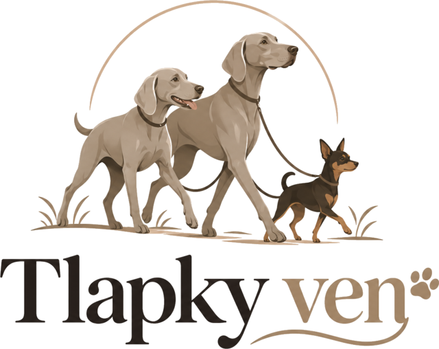

Dlouhý den v práci
Odjíždíte brzy a vracíte se pozdě? Pes nemusí na procházku čekat až do večera.
Jednorázové i pravidelné venčení psů v Havířově, Ostravě, na Karvinsku, Frýdecko-Místecku a okolí. S mými mnohaletými praktickými zkušenostmi se psy bude váš parťák v dobrých rukou.

Odjíždíte brzy a vracíte se pozdě? Pes nemusí na procházku čekat až do večera.
Pár dní nejste ve formě, ale pes svůj pohyb potřebuje stejně jako jindy. Ráda to mezitím vezmu za vás.
Odjíždíte pryč a pes zůstává doma sám? Postarám se, aby mu procházky nescházely, i když tam zrovna nejste.
Potřebujete pravidelnou ruku navíc? Domluvíme si venčení tak, aby sedlo vašemu i psímu rytmu.
Zavoláte a řeknete mi základní informace o vašem pejskovi a požadovaném termínu.
Před prvním samostatným venčením je vhodné osobní seznámení se psem a domluva všech důležitých detailů.
Délku a charakter procházky přizpůsobíme věku, kondici, temperamentu a zvyklostem pejska.
V domluvený čas pejska převezmu a postarám se o jeho procházku.
Pro situace, kdy potřebujete záskok pouze občas, například kvůli práci, nemoci, cestě nebo jiným povinnostem.
Pro majitele, kteří chtějí zajistit svému pejskovi procházku pravidelně v konkrétní dny nebo časy.
Každý pes i situace jsou jiné. Rozsah služby proto lze domluvit podle konkrétních potřeb.
| Služba | Cena |
|---|---|
| Venčení 30 min | 150 Kč |
| Venčení 60 min | 230 Kč |
| Dlouhá procházka do přírody (90 až 120 min) |
320 až 380 Kč |
| Další pes z domácnosti | sleva 50 % |
| Víkend | příplatek 20 % |
| Svátek | příplatek 50 % |
Příklad: hodinová procházka ve Frýdku-Místku vyjde na 230 Kč plus 100 Kč příplatek za dojezd, tedy celkem 330 Kč.
| Vzdálenost | Příplatek za dojezd |
|---|---|
| do 6 km | zdarma |
| 6 až 12 km | +50 Kč |
| 12 až 20 km | +100 Kč |
| 20 až 30 km | +150 Kč |
| nad 30 km | po domluvě |
Vzdálenost se počítá po silnici z Havířova-Životic k vám (jedním směrem). Příplatek už zahrnuje cestu tam i zpět a účtuje se jednou za návštěvu, i když venčím více psů z jedné domácnosti.
Jmenuji se Daniela Stoklasová a práce se psy je součástí mého života více než deset let. Přes deset let jsem pracovala v havířovském útulku MAX, několik let jsem se věnovala sportovní kynologii a dnes se věnuji také lovecké kynologii.
Díky tomu jsem poznala psy nejrůznějších velikostí, temperamentů i životních příběhů. Vím, že každý potřebuje trochu jiný přístup. Právě na tom stavím i své venčení.
Doma mi společnost dělají dva výmarští ohaři Břéťa a Eda a pražský krysařík Mercedes. Psi proto nejsou jen moje práce. Jsou přirozenou součástí každého mého dne.
Nejčastěji v Havířově, Ostravě a v okresech Karviná a Frýdek-Místek. Po domluvě mohu přijet také do okolních měst a obcí.
Nejste si jistí, zda přijedu i k vám? Zavolejte mi.
Ověřit lokalituMladý aktivní pes může potřebovat svižnější tempo a více pohybu. Psí senior naopak klidnější trasu a dostatek času. U každého pejska proto respektuji jeho věk, kondici, temperament i zvyklosti, které mi jako majitel popíšete.
Každou poptávku posuzuji individuálně podle pejska, jeho chování a podmínek venčení.
Ano, služba je určena pro jednorázové i pravidelné venčení podle vzájemné domluvy.
Před prvním samostatným venčením preferuji osobní seznámení, při kterém probereme jeho zvyklosti, chování a vše důležité.
Služba je určena především pro Havířov, Ostravu, Karvinsko a Frýdecko-Místecko. Okolní lokality lze domluvit individuálně.
Řekněte mi je rovnou při telefonátu. Společně vyhodnotíme, zda a za jakých podmínek je možné venčení bezpečně zajistit.
Nejrychlejší způsob, jak venčení domluvit. Zavolejte a společně probereme termín i přesnější detaily procházky.
737 058 045Na mobilu klepnutím na číslo rovnou zavoláte.